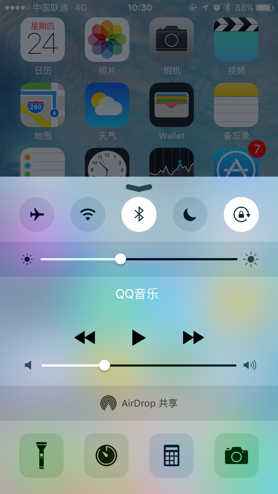

Tips：关闭iOS设备静音后为什么播放视频还是有声音？
大家有没有类似的经历：将iPhone/iPad关闭为静音后，在朋友圈点开别人发来的视频，结果音乐还是大得死人？在开会或者播放某些“小众”视频时，场面会非常尴尬……😂
为什么在静音模式下仍有App会外放声音？
其实在按音量+/-的时候如果仔细看，会发现在不同的应用中屏幕显示的调节内容是不一样的。在桌面调节的是铃音；而在音乐、视频、游戏中是音量。
方法一
在“设置——声音”中，关闭“用按钮调整”选项，这样侧面的音量按键就始终是调整音量了。手机铃音等提醒音，可以在这个设置拖动进度条来调整，不再根据上下文的不同一会儿调这个，一会儿调哪个了。
方法二
向上轻扫显示“控制中心”，拖动音量控制进度条到静音的位置，这个进度条是控制“音量”的。每次需要静音播放什么的时候，可以养成习惯确认一下“控制中心”的音量。
